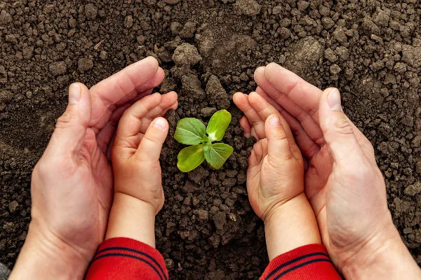
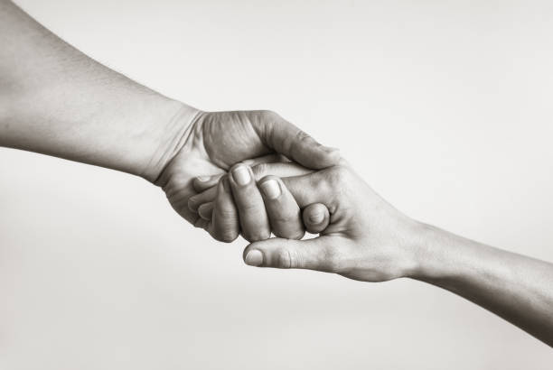

Seja muito bem-vindo/a!
Nossa missão
 gO aquecimento-global é um problema gravíssimo que esta sendo discutido a bastante tempo entre cientistas e outros especialistas. Um dos efeitos do aquecimento-global são as ocorrências de eventos climáticos extremos, como tempestades severas, que causam deslizamentos e enchentes como em Petrópolis. Essa categoria de problema vão se tornar mais frequentes pelo mundo. Contudo, esses eventos não irão afetar todos da mesma maneira. Os seus impactos estão sendo maiores para as populações com menor renda, aponta um artigo do Fórum Econômico Mundial. Queremos fazer algo a respeito, para ajudar essas pessoas. Em tragédias de grandes proporções, forma-se uma rede de socorro, composta por: agentes governamentais, empresas privadas, organizações não governamentais e voluntários. O nosso objetivo é auxiliar essa ajuda humanitária com a introdução de um web sistema acompanhado de um aplicativo para android.
Nossa visão
Desejamos atingir a excelência com simplicidade: Ser referência em nosso segmento de Sistema web/App android que faz o intermédio entre o doador, instituições filantropicas e a pessoa que esta solicitando a ajuda, tudo isso com foco em atendimento ao cliente.
Nossos valores
Melhoria contínua: Gestão de qualidade. Oferecer constantemente um ótimo padrão de atendimento aos nossos usuários.
Foco em Resultado: Capacidade de criar valor garantindo a remuneração do capital investido no nosso sistema web/Android-app e uma boa experiência de suporte para os usuários.